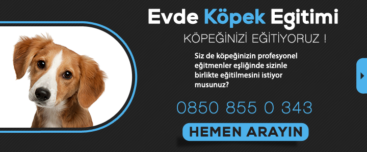

BİLGİSAYAR SATIN ALIRKEN NELERE DİKKAT EDİLMELİ

Eğer bir bilgisayar alacaksanız ve bilgisayarlar hakkında bir bilginiz yoksa bu makale yardımcı olabilir.İyi okumalar.
İşlemci
Bilgisayarın beynidir işlemci.En büyük 2 işlemci markası var.Belki duymuşsunuzdur.Birisi İntel diğeri iste AMD'dir.İntel işlemcisi programsal kullanım için tercih ediliyor.AMD işlemcisi ise grafik açısından tercih edliliyor.Kullanım amacınıza bağlı olarak istediğinizi seçebilirsiniz.
RAM
Ram,bilgisayar çalışırken geçici olarak depolama işlemi görür.Mesela bir sekmeden başka bir sekmeye geçileceği zaman ram kullanılır.Bu yüzden ram bilgisayarınızın hızını belirler.
-Ekran kartı
Oyuncularımızın olmazsa olmazıdır ekran kartı.Yüksek kalite olsun,akıcılık olsun ekran kartına bağlıdır.NVIDIA ekran kartı modelleri tavsiyemizdir.
Disk/SSD
Güçlü bir bilgisayar istiyorsanız,tavsiyemiz PCIe NVMe SSD’dir.
Dayanıklılığınızı artırır
Sürekli işleyen ve hareket eden bir vücudunuz olduğu için dayanıklılığın da artar. Çoğu insan bacak,bel ve sırt gibi bölgelerde ağrılar ve kramplar yaşar.Spor sayesinde bunları yaşama ihtimaliniz çok düşük olur. Eğilirken bile bir yerleri ağrıyan değil, hayatının her anında hareketli ve durmak nedir bilmeyen bir kişiye dönüşürsünüz.
Yüksek tansiyona iyi gelir
Yüksek tansiyon hastaları için vazgeçilemez bir nimettir spor.Doktorunuza danışarak size uygun sporu bulup yapmanız tansiyonunuz açısından iyi gelecektir.
Uyku sorununuz ortadan kalkar
Erken de yatsanız geç de yatsanız uyuyamıyorsunuz değil mi? Bir sağa dönüyorsunuz bir sola.Düzenli spor yaparak ve kendinizi yorarak hem stresinizi azalttığınız için hem de yorulduğunuz için rahat bir uyku çekebilirsiniz.
Kaslarınız güçlenir
Hangi sporu yapıyorsanız o çalıştırdığınız kaslarınız güçlenir.
Vücuttaki ağrılarınız azalır
Belki bir diş ağrınız vardır,belki bir yerinizde şişlik vardır o ağrı yapıyordur.Spor acılarınızı ve ağrılarınızı dindirmeye yardımcı olur.

Düzenli spor yapmanın faydaları

Kitap okumanın inanılmaz faydaları